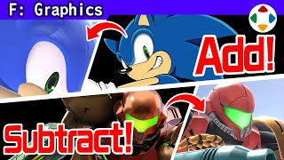
速览
如你所知，《大乱斗》里参战的角色有各种世界观：有卡通的，有写实的。站在同一场地时要不显得违和，必须考虑很多。只照官方形象来做，画面会很不统一。这是原作马力欧的图，这是《大乱斗 X》的马力欧：画上了牛仔布等各种质感（当然获得了许可）。各种世界和笔触的角色齐聚一堂，笔触调整不可或缺，介绍五个做法。① 饱和度要克制：大红、大蓝、大黄的角色很多，但表现得稍淡一些，更容易受光源影响；大红在游戏里不论什么环境光几乎都是大红，常和沉稳的角色不搭。② 纹理适度刻画：卡通系本来单色较好，写实系刻画很深；为填补差距，给卡通系增加刻画，写实系则减轻厚重感。③ 调整头身比：各自的头身各有乐趣，虽然有点乱来，但相对原作微调头身比，一点点减少违和感——例如贝优妮塔大乱斗版和原作头身差很多，对比有违和感，但放进游戏里不觉得有问题。④ 必要时重新设计：如欧力马的太空服和原作差很多；机器人的设计以现代眼光看也有足够信息量；雪山兄弟脚底有钉和雪一样的污渍；每个斗士都经过扎实的重新设计，整体更好、笔触统一。⑤ 做成现实中可能存在的表现：大金刚和耀西原作里用闭上瞳孔的漫画表现，本应忠实遵守，但《大乱斗》特别获准改为闭眼皮；牙齿咬合也稍有不同——从「这些角色真的存在会怎样」的角度深化细节。他常对美术说：不要让它看起来像动画和真人在打架；放着不管就会变成那样，所以要有意图和设计地统一。动作、特效、声音等也有各种事例，为了作为斗士能毫无破绽地玩还需要更多功夫，那是另一个话题。
1. 卡通与写实同台 0:04
如你所知，《大乱斗》参战的角色拥有各种世界设定：有卡通的，也有写实的。站在同一场地还不显得违和，必须考虑很多事。
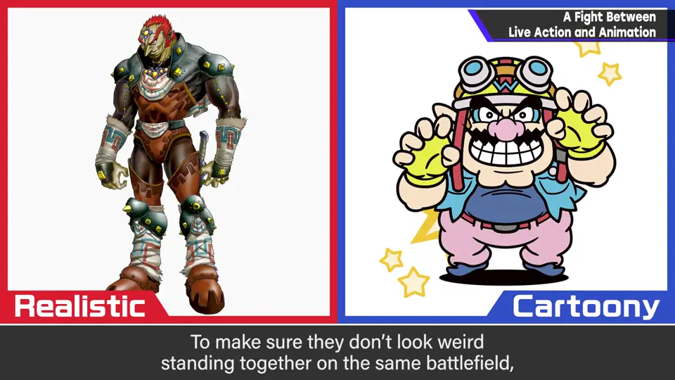
这是原作马力欧的图，这是《大乱斗 X》的马力欧：画上了牛仔布等各种质感（当然已获得许可）。
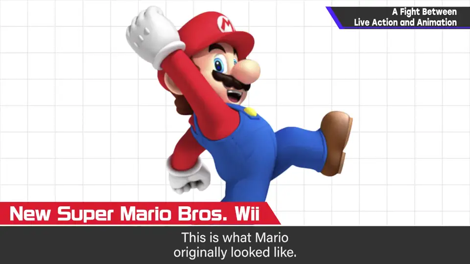
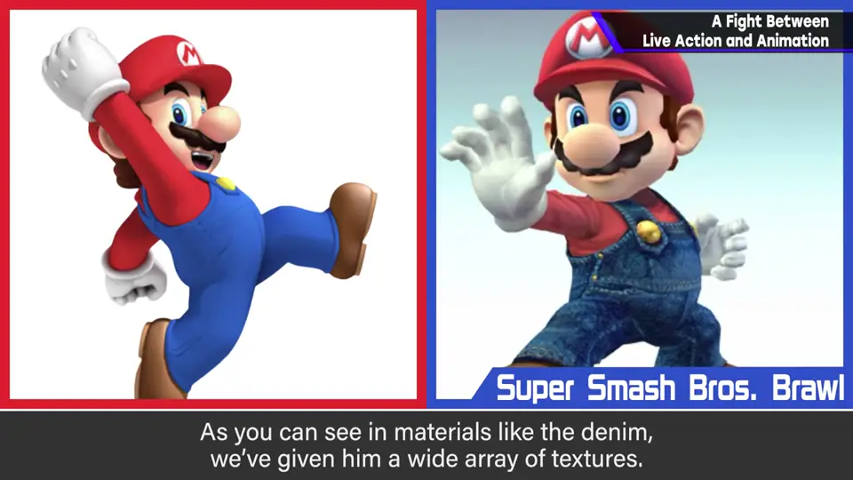
各种世界与笔触的角色齐聚一堂，笔触调整不可或缺。下面介绍五个做法。
2. ① 饱和度要克制 0:57
大红、大蓝、大黄这种色彩鲜明的角色很多，但比那稍淡一些来表现，让它更容易受光源影响。
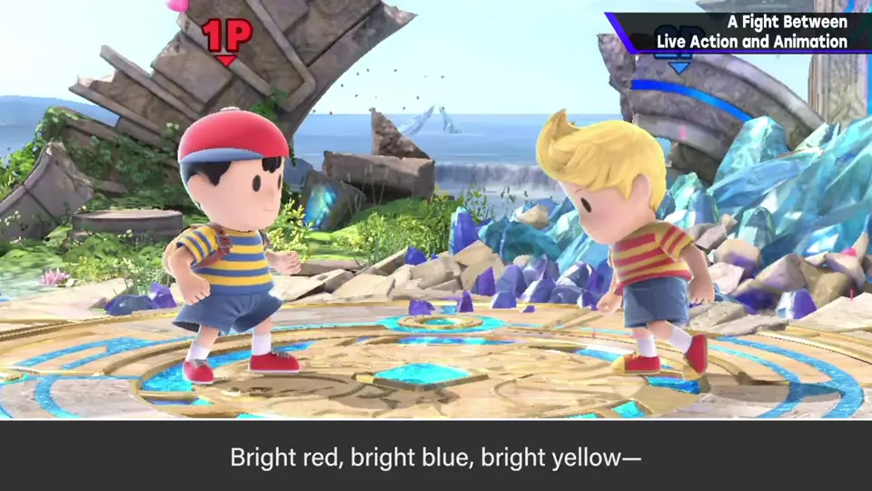
3. ② 纹理适度刻画 1:25
卡通系本来单色较好，写实系刻画得很深。为填补差距，给卡通系增加刻画，写实系则减轻厚重感。
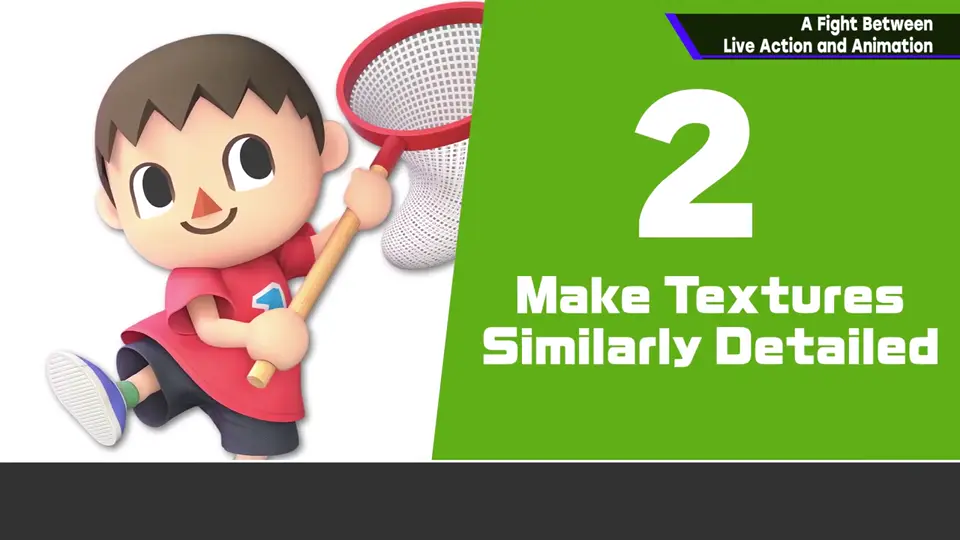
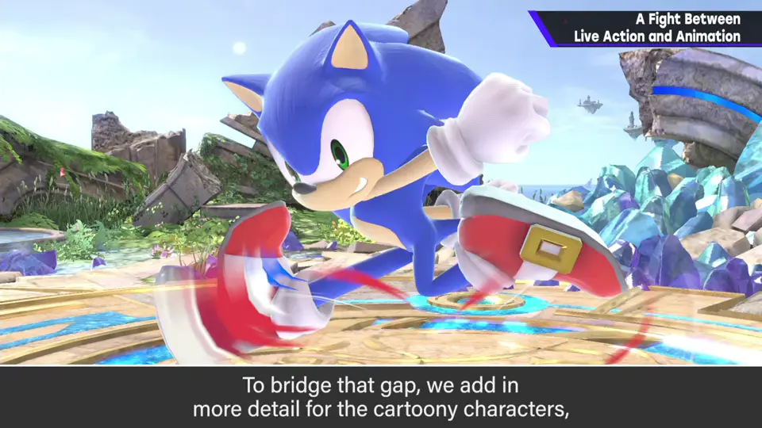
4. ③ 调整头身比 1:46
每个角色的头身比都有乐趣，虽然有点乱来，但相对原作微调头身比，一点点减少违和感。
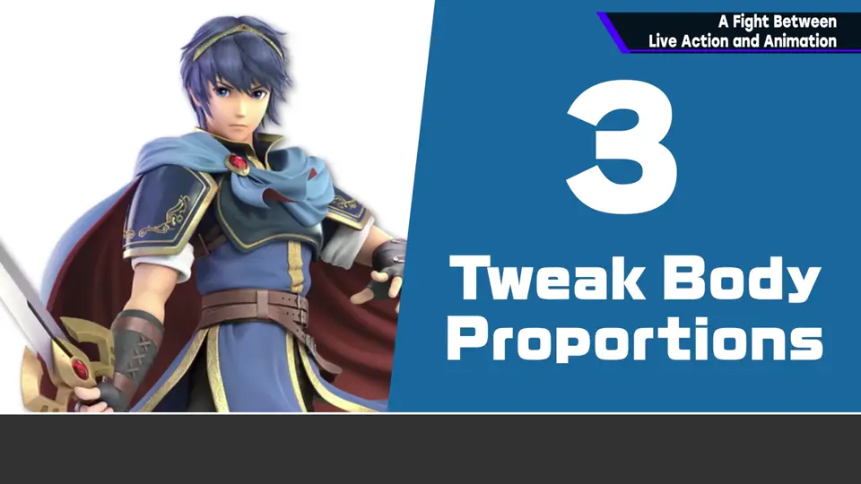
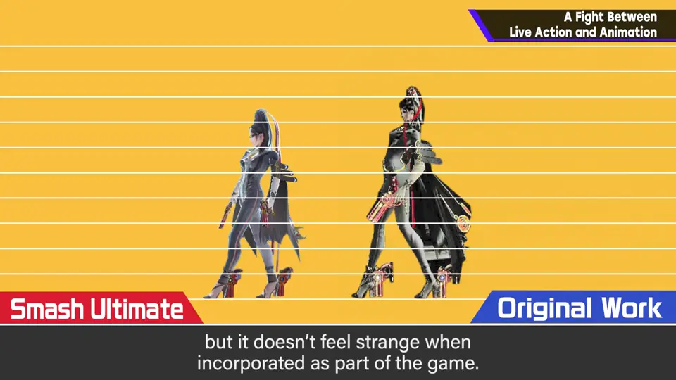
例如贝优妮塔的大乱斗版和原作，头身差很多。对比看会有违和感，但作为游戏整合起来应该不会觉得有问题。其他角色也有差这么多的。
5. ④ 必要的重新设计 2:23
例如欧力马的太空服，和原作相比差这么多；机器人的设计以现代眼光看也有足够的信息量；雪山兄弟脚底可以看到钉和雪一样的污渍。
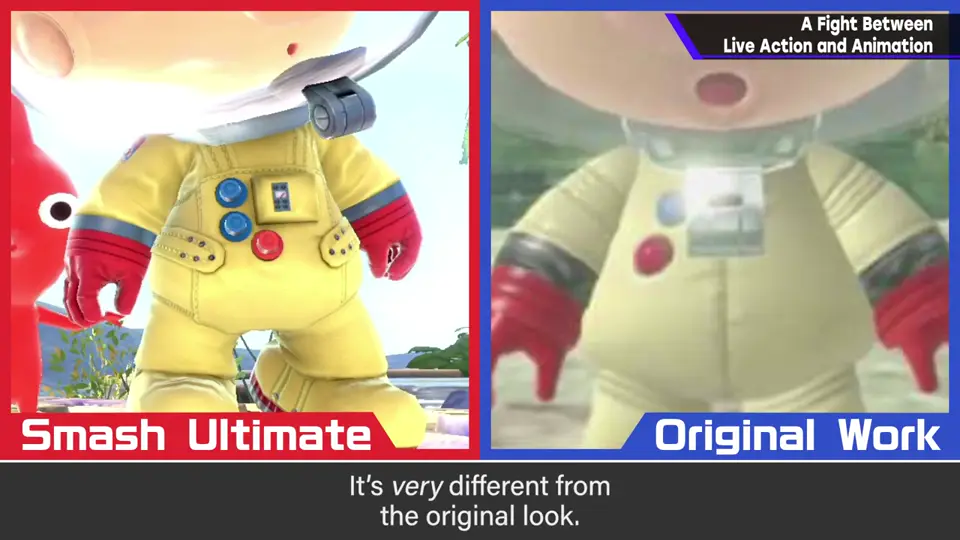
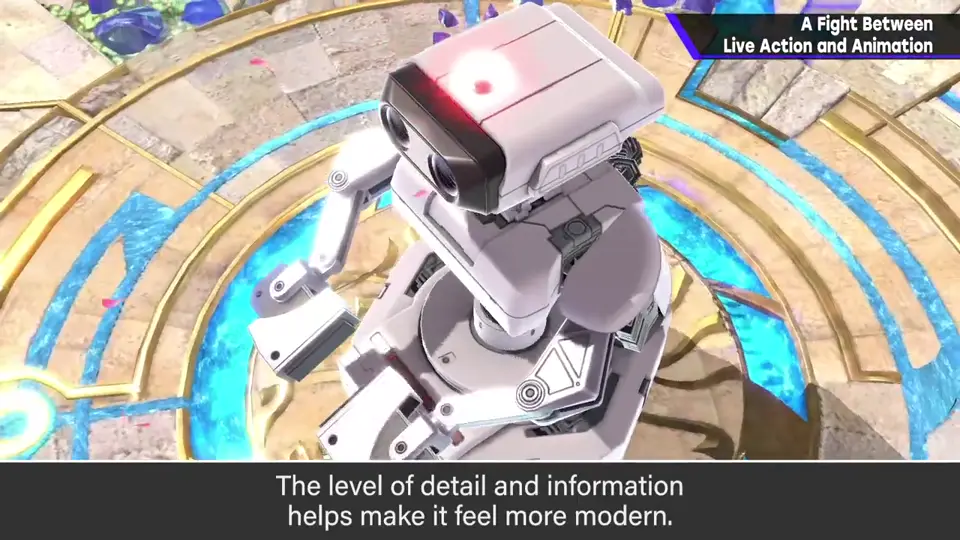
6. ⑤ 现实中可能存在的表现 3:05
例如大金刚和耀西的眼睛：原作里用的是闭上瞳孔的漫画表现，本应忠实遵守，但《大乱斗》特别获准改为闭上眼皮。牙齿咬合也稍有不同。
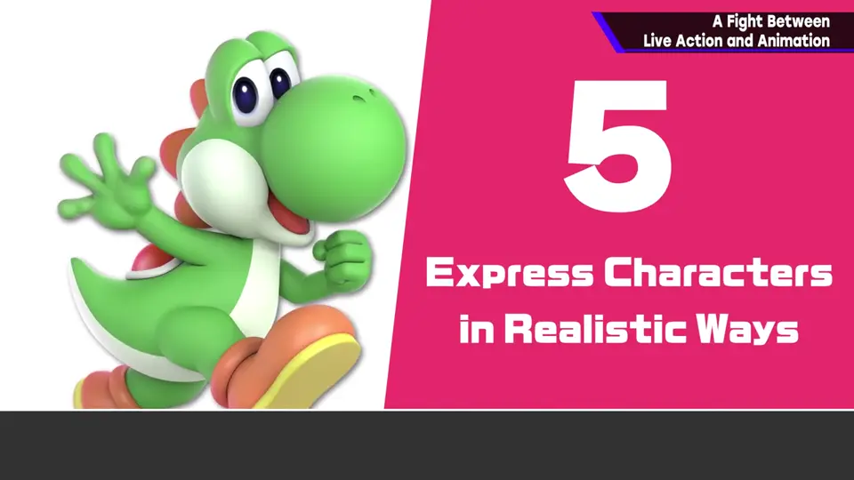
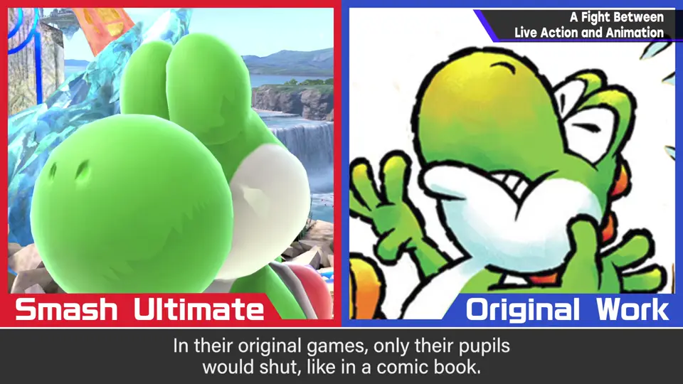
从「如果这些角色真的存在会怎样」的观点，深化各种细节。
7. 别让动画和真人打架 3:35
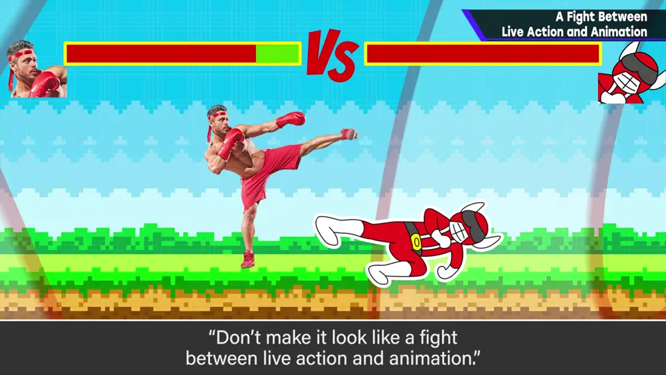
光是图形就还有很多，动作、特效、声音等也有各种事例。要作为斗士毫无破绽地玩，还需要更多功夫——那是另一个话题。
自测题
1. 为什么《大乱斗》的角色要降低饱和度？
稍淡更容易受光源影响；大红在任何环境光下都几乎是大红，常和沉稳角色不搭。 1:00
2. 纹理刻画如何填补卡通与写实的差距？
给卡通系增加刻画，给写实系减轻厚重感。 1:30
3. 大金刚和耀西的眼睛在《大乱斗》中做了什么改变？
原作只闭上瞳孔（漫画表现），《大乱斗》获准改为闭上眼皮，更像现实中存在。 3:15